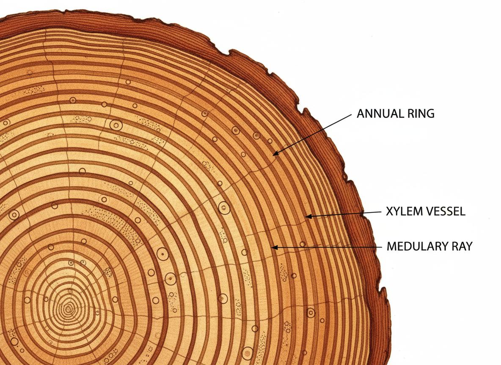
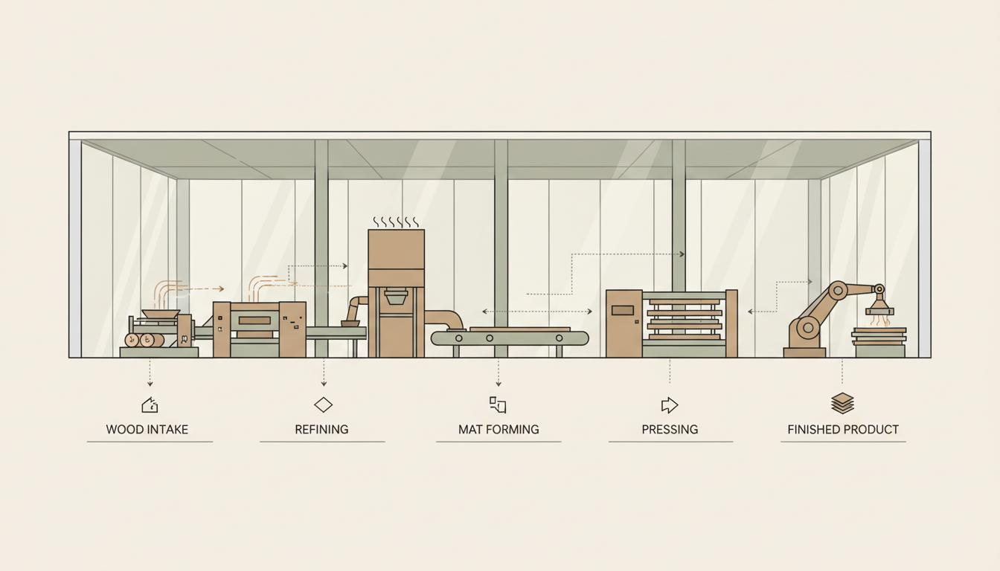
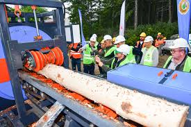
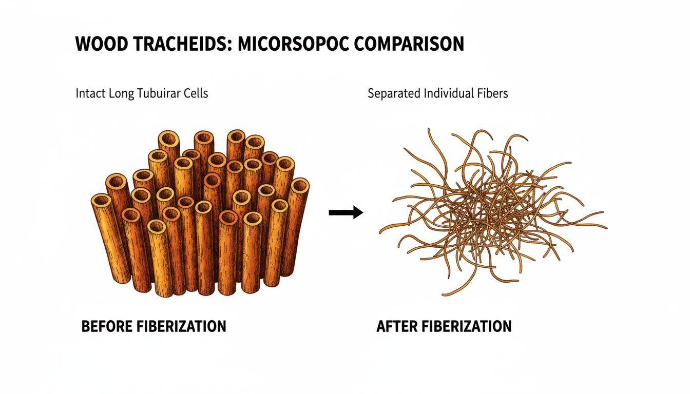
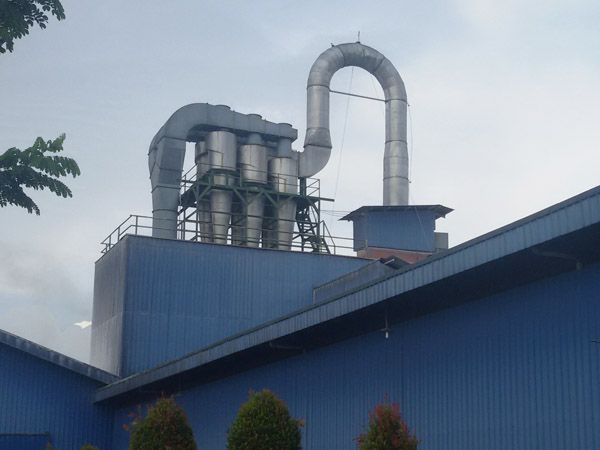
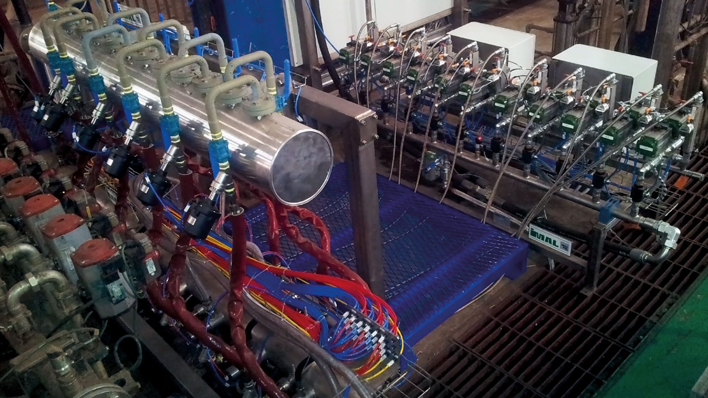
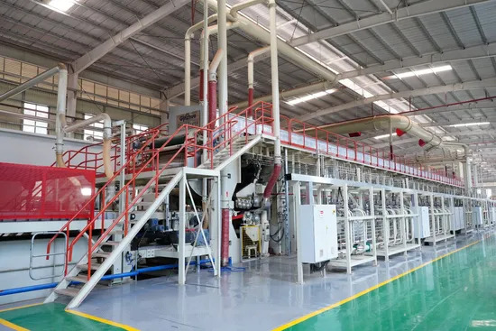
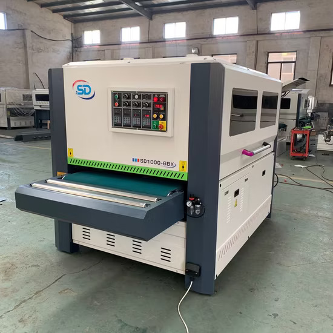

Odun yapısının liflevha üretim süreciyle beraber öneminin vurgulanması


Üretim sürecine giren lignoselülozik hammaddelerdeki liflerin doğal yapışma ve keçeleşme özelliklerinden faydalanılarak ve/veya ilave yapıştırıcı maddelerinin yardımı ile oluşturulan levha taslağının kurutulması ve preslenmesi işlemlerinin ardından çıkan ürün olarak tanımlarız. Daha kısa bir şekilde ifade edecek olursak lignoselülozik maddelerin liflendirilmesi ile oluşan lif demetlerinin yeniden şekillendirilmesiyle ortaya çıkan üründür.
Liflevha üretiminde kullanılan hammaddelerin kaynaklarına göre dağılımı ve özellikleri (Ndazi et al., 2006)
Çam, göknar, ladin gibi iğne yapraklı türler. Uzun traheidleri sayesinde yüksek mukavemet sağlar.
Meşe, kayın gibi geniş yapraklı türler. Kısa lifleri kompakt yapı oluşturur.
Kereste atıkları, budaklar ve geri dönüştürülmüş kağıt ürünleri.
Odun işleme sanayinin yan ürünleri, düşük maliyetli hammadde kaynağı.
Her üretim aşamasında odun yapısının rolü ve anatomik özelliklerin etkisi
Ağaç türü seçimi, liflevha kalitesini doğrudan etkiler. İlkbahar odunundaki geniş çaplı, ince duvarlı traheidler lifleme işleminde daha kolay ayrışırken, yaz odunundaki kalın duvarlı hücreler son üründeki mukavemeti arttırır.
Kabuk alma işlemi, odun liflerinin kalitesini korumak için oldukça önemlidir. Kabuktaki belirli mineraller, lifleme makinelerine ve ekipmanlarına zarar verebilir ve son üründe istenmeyen koyu renkli lekeler oluşturabilir.

Lifleme işlemi, odun traheidlerinin birbirinden ayrılmasını sağlar. Isı ve mekanik kuvvet uygulanarak orta lümendeki lignin yumuşatılır ve lifler birbirinden ayrıştırılır. Bu süreçte traheid yapısı bozulmadan korunmasına oldukça dikkat edilmelidir.

Kurutma işleminde, odun liflerinin hücre duvarındaki pit yapıları nemin dışarı çıkışını etkiler. İdeal nem oranı %8-12 arasında değişir. Aşırı kurutma liflerin kırılganlaşmasına, yetersiz kurutma ise tutkal tutunumunu olumsuz etkiler.

Tutkallama aşamasında, liflerin yüzey alanı ve hücre duvarı kompozisyonu tutkal tutunumunu etkiler. Yüksek oranda selüloz içeren lifler daha iyi tutkal bağlantısı sağlar. Lignin oranının fazla olması liflerde tutkal tutunumunu zayıflayabilir.

Pressleme işleminde sıcaklık ve basınç altında lifler birbirine kaynar ve tutkal sertleşir. Lif oryantasyonu, panelin mekanik özelliklerini belirler. Rastgele oryantasyon izotropik özellikler sağlarken, düzenli oryantasyon anizotropik davranış göstermesine sebep olur.

Zımparalama işlemi, panel yüzeyindeki lif çıkıntılarını düzelterek pürüzsüz bir yüzey oluşturur. Yüzey yoğunluğu ve lif yapısı, sonradan uygulanacak kaplamaların (laminat, boya vb.) tutunumunu ve dayanımını etkiler.

Liflevha üretiminin her aşamasında harcanan enerji miktarı ve verimlilik analizi
En yüksek enerji tüketiminin olduğu aşama. Mekanik ve termomekanik işlemler yoğun enerji gerektirir.
Buhar üretimi ve hava sirkülasyonu için yüksek ısı enerjisi gereksinimi.
Hidrolik pres sistemleri ve ısıtma platenleri için enerji.
Kabuk alma, zımparalama, taşıma ve yardımcı sistemler.